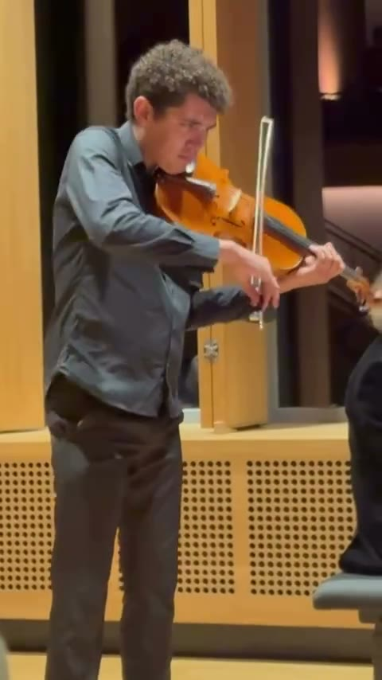
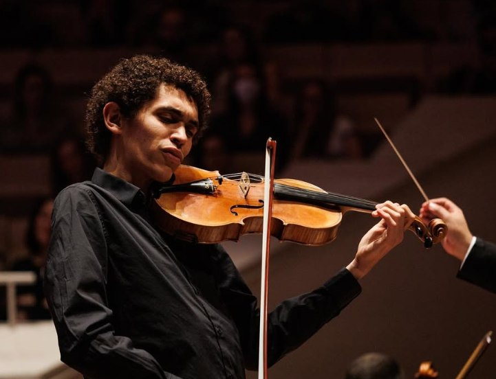
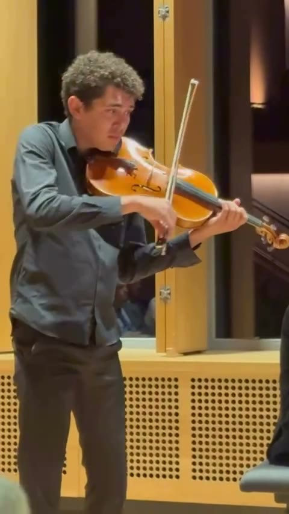
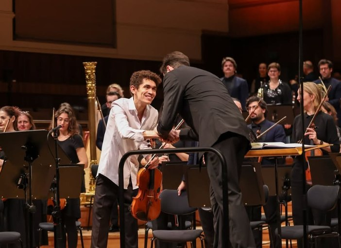
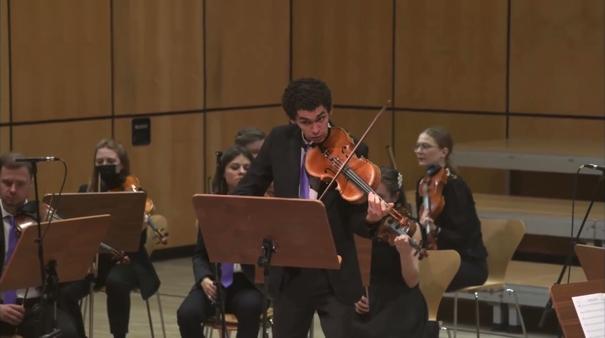

A Brazilian violist from Goiás, in residence at the Queen Elisabeth Music Chapel in Belgium.
Queen Elisabeth Music Chapel
Artist in Residence
Verbier Festival Chamber Orchestra
Member
Utopia Orchestra
Member
Haute École de Musique de Genève
Studied with Miguel da Silva; chamber music with Gábor Takács

Moments on stage
Swipe through recent performances.


Watch the recital clip

Watch the ensemble clip